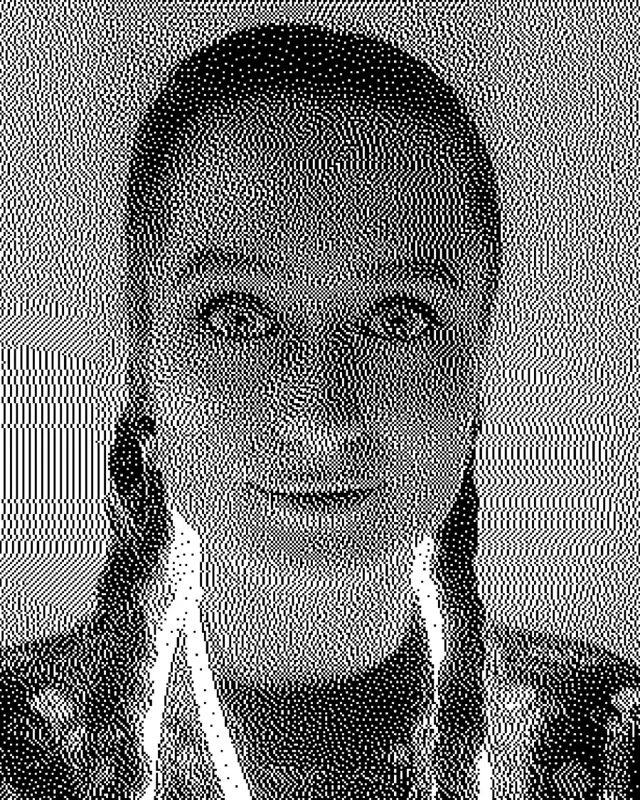
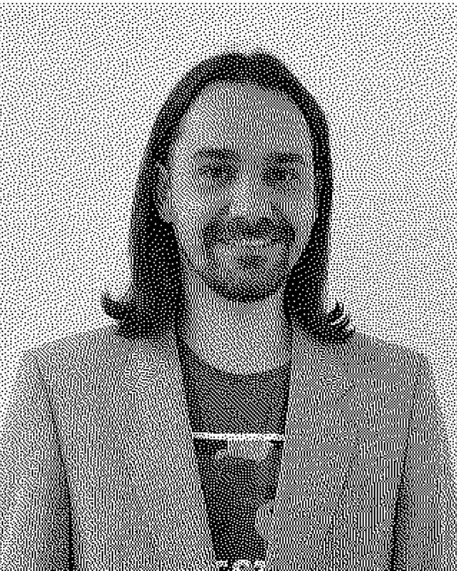

Ми — асоціація
Креативна область мислення
Creative Area of ThinkingCAT
Культура як простір взаємодії
Незалежна культурна та громадська організація з Полтави. Працюємо на перетині сучасного мистецтва, цифрових технологій, культури та міського середовища.
Полтава→Полтавщина→Україна→світ
↓
01
Про організацію
Незалежна культурна та громадська організація з Полтави. Працюємо на перетині сучасного мистецтва, цифрових технологій, культури та міського середовища. Заснована у 2019 році.
01 Що робимо
Мистецькі проєкти, фестивалі, виставки й освітні програми. Досліджуємо локальний контекст.
02 З ким
Митці, культурні діячі, молодь і незалежні ініціативи — співпраця замість ієрархії.
03 Де
Культурне середовище Полтави та Полтавщини — і відкритість до міжрегіональної та міжнародної співпраці.
Наша місія
Розвивати культурне середовище, у якому мистецтво стає інструментом діалогу, дослідження, взаємодії та суспільних змін.
До чого прагнемо
Щоб українські регіони були не периферією культурного процесу, а самостійними учасниками сучасного мистецтва та міжнародного культурного діалогу.
ПолтаваПолтавщинаУкраїнасвіт
02
Основні напрями
Сучасне та цифрове мистецтво
Contemporary & Digital Art
Фестивалі, виставки, інсталяції, відеоарт, VR/AR та експериментальні медіапрактики.
Публічне мистецтво та міське середовище
Public Art
Художні інтервенції, робота з публічним простором, локальною історією та міською ідентичністю.
Культурна спадщина та пам'ять
Heritage & Memory
Дослідження локальних традицій, культурної пам'яті та їх сучасне мистецьке переосмислення.
Культурна взаємодія та освіта
Education & Communities
Лекції, воркшопи, мистецькі лабораторії, культурні обміни й розвиток локальних спільнот.
03
Вибрані проєкти
Натисніть на проєкт, щоб відкрити повний опис.
04
Команда
Співзасновники, куратори та художники ГО «Креативна область мислення» (Creative Area of Thinking, CAT).

Голова ГО · кураторка
Роксолана Дудка
Roksolana Dudka
Мультидисциплінарна мисткиня з Полтави, докторка філософії з дизайну, кандидатка мистецтвознавства, доцентка кафедри архітектури та дизайну Луцького національного технічного університету. Працює з живописом, керамікою, VR / AR та відеоартом, створює проєкти в публічному просторі, інсталяції та партисипативні мистецькі проєкти.
Кураторка резиденції «Межі пам'яті» Inter3Lab Poltava (2024) та фестивалів сучасного цифрового мистецтва «Контури відновлення. Міжпростір» (2025) і «МЕТАНОЯ» (2026). Співавторка концепції платформи публічного мистецтва POST, авторка робіт «Ракета» та серії «Folk.exe», центральної зірки «Полтавської Ходи звіздарів».
Multidisciplinary artist and curator from Poltava, Ukraine — painting, ceramics, VR / AR, video art and public art. Curator of Inter3Lab Poltava “Borders of Memory” (2024), the digital art festivals “Contours of Restoration. Interspace” (2025) and METANOIA (2026).
Instagram · @roxfolkart ↗
Правління ГО · куратор
Вартан Маркар'ян
Vartan Markarian
Міждисциплінарний художник із Полтави: інсталяція, нові медіа (VR-імерсивне та 360-відео, AR, цифрове мистецтво), живопис. Поєднує мистецтво, дослідження та цифрові технології для вивчення екологічних і культурних процесів — пам'яті, змінюваності ландшафтів, руйнування та відновлення.
Куратор фестивалів сучасного цифрового мистецтва «Контури відновлення. Міжпростір» (2025) і «МЕТАНОЯ» (2026), співавтор концепції POST, автор відеороботи «Горизонти зникнення» та інсталяції «Межа тиші».
Interdisciplinary new media artist from Poltava, Ukraine — installation, VR, 360-video, AR, digital art and painting. Curator of the digital art festivals “Contours of Restoration. Interspace” (2025) and METANOIA (2026).
Instagram · @artvartan ↗
05
Партнерства та грантова підтримка
Ми залучаємо грантові ресурси, працюємо з культурними програмами та розвиваємо партнерства, що дозволяють реалізовувати незалежні мистецькі й суспільно важливі ініціативи.
Міжнародна співпраця
Досвід участі в міжнародних мистецьких і резиденційних проєктах, зокрема INTER3LAB за підтримки програми ЄС «Креативна Європа» та Міністерства закордонних справ Польщі.
Субгрантова підтримка NOVA United
Субгрант на фестиваль «Контури відновлення. Міжпростір» у межах програми передавання титулу «Львів — Молодіжна столиця Європи 2025». 19 березня 2026 року команда представила досвід фестивалю на підсумковій події року шерінгу титулу в Полтаві.
Програма «Зав'язь»
Участь у програмі підтримки культурних ініціатив дала можливість розвинути міжміський проєкт «НАМИСТО» — культурну співпрацю Полтави та Кременчука. Фінансування — Adam Harber Foundation та Obriy Holiday Village.
Полтава — наша точка відліку. Локальний контекст — основа для ширшого культурного діалогу.
Ми створюємо проєкти, але також розвиваємо зв'язки, середовище та можливості для тих, хто формує сучасну культуру.
Контакти
та співпраця
Пишіть нам
З питань співпраці, партнерства, міжнародних проєктів та участі в ініціативах:
roxolana.art@gmail.com mvartanart@gmail.comДе ми
ГО «Креативна область Мислення»
Creative Area of Thinking (CAT)
Полтава, Україна